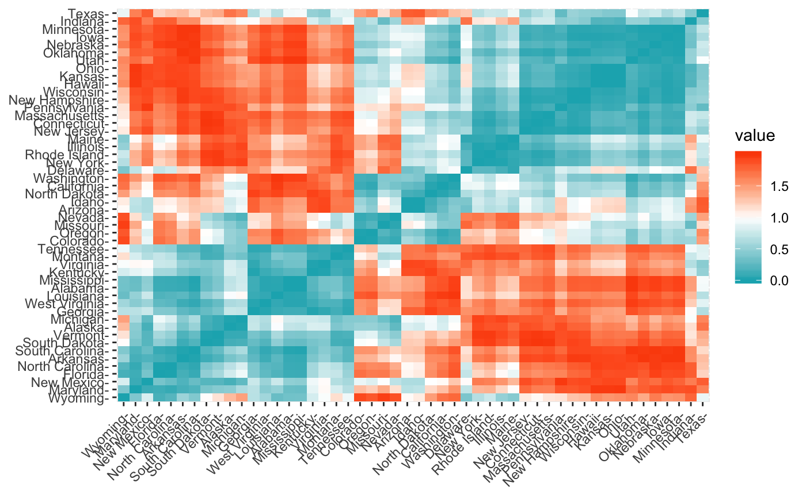

dist.RdClustering methods classify data samples into groups of similar objects. This process requires some methods for measuring the distance or the (dis)similarity between the observations. Read more: STHDA website - clarifying distance measures..
get_dist():
Computes a distance matrix between the rows of a data matrix. Compared to
the standard dist() function, it supports
correlation-based distance measures including "pearson", "kendall" and
"spearman" methods.
fviz_dist(): Visualizes a distance matrix
get_dist(x, method = "euclidean", stand = FALSE, ...) fviz_dist(dist.obj, order = TRUE, show_labels = TRUE, lab_size = NULL, gradient = list(low = "red", mid = "white", high = "blue"))
| x | a numeric matrix or a data frame. |
|---|---|
| method | the distance measure to be used. This must be one of "euclidean", "maximum", "manhattan", "canberra", "binary", "minkowski", "pearson", "spearman" or "kendall". |
| stand | logical value; default is FALSE. If TRUE, then the data will be standardized using the function scale(). Measurements are standardized for each variable (column), by subtracting the variable's mean value and dividing by the variable's standard deviation. |
| ... | other arguments to be passed to the function dist() when using get_dist(). |
| dist.obj | an object of class "dist" as generated by the function dist() or get_dist(). |
| order | logical value. if TRUE the ordered dissimilarity image (ODI) is shown. |
| show_labels | logical value. If TRUE, the labels are displayed. |
| lab_size | the size of labels. |
| gradient | a list containing three elements specifying the colors for low, mid and high values in the ordered dissimilarity image. The element "mid" can take the value of NULL. |
get_dist(): returns an object of class "dist".
fviz_dist(): returns a ggplot2
data(USArrests) res.dist <- get_dist(USArrests, stand = TRUE, method = "pearson") fviz_dist(res.dist, gradient = list(low = "#00AFBB", mid = "white", high = "#FC4E07"))